3D Materials
Qt Design Studio provides a set of pregenerated Qt Quick 3D materials. If the 3D materials are not displayed in Components, you can add the QtQuick3D.Materials module to your project, as described in Adding and Removing Modules. However, since using the pregenerated 3D materials may cause performance issues, we advice you to use Principled Material, Default Material, or Custom Material instead. For more information, see Materials and Shaders and Creating Custom Materials.
Note: The QtQuick3D.Materials module is not available in Qt 6. To use the pregenerated Qt Quick 3D materials, you need to select Qt 5 as the Target Qt Version when creating your project.
To apply a 3D material to a component, you should first delete the default material and then drag-and-drop a new material from Components > Qt Quick 3D Materials > Qt Quick 3D Materials to a model component in Navigator. The materials you add to the model are listed in the model component's Properties view. You can apply the same material to another component as well. Again, delete the default material first. You should then select the component and go to the Properties view. Find the Materials property, select the  icon, and choose the new material in the dropdown menu.
icon, and choose the new material in the dropdown menu.
Each material has its own set of properties that can be used to further define the appearance of the material. For each material the Environment Map property specifies whether or not environment mapping is used for specular reflection. Use the Texture property to select a texture for the environment map. The Shadow Map property determine whether or not shadow mapping is used for generating realistic shadows. You can also select a Texture for shadow mapping.
Custom Material
You can use the Custom Material component available in Qt Quick 3D Effects > Custom Shader Utils as the base component for creating custom materials used to shade models. For more information, see Custom Effects and Materials and Custom Shaders.
Metal Materials
The following describes properties of the metal-based materials, which include Aluminum, Aluminum Anod Emis, Aluminum Anodized, Aluminum Brushed, Aluminum Emissive, Copper, and Steel Milled Concentric.
Color
Set the surface tint of the material by specifying the Metal Color and Base Color properties. Use the Emission Color property to set the color of the glow for emissive materials. You can either use the color picker or specify an RBG value.
Reflection
Use the properties under the Reflection tab to specify the reflective qualities of the material. For more information on the various material properties related to reflection, see Using Highlights and Reflections.
- Use the Map Offset and Map Scale properties to define offset and scale for the reflection map. You can also define a texture for the reflection map by using the Texture property, and set a the tiling repeat for it by using the Tiling property.
- To further define the reflective qualities of the material, you can also set the Stretch and Texture properties of Reflection, or define a numerical value for Reflectivity.
- Set the Fresnel Power property to decrease head-on reflections (looking directly at the surface) while maintaining reflections seen at grazing angles.
Roughness
Use the Roughness properties to determine how light behaves when it comes in contact with material. With zero roughness, light bounces off a material, which makes it appear glossy. Increased roughness causes the light reflected off the material to scatter, which results in a matte appearance.
- The Map Offset Map Scale and Texture specify the quality of roughness applied to the material.
- Use the numerical Roughness property to define how glossy or matte the material appears.
Emission
Use the properties under the Emission tab to specify the emissive qualities of the material. For more information on properties related to emission, see Self-Illuminating Materials.
- The Intensity property determines the quantity of light the surface of material emits.
- The Map Texture property defines a texture for emissive map, while the Mask Texture defines a texture for emissive mask. Use the Mask Offset to set the mask offset for the emissive map.
Bump
Specify the properties under the Bump tab to simulate fine geometry displacement across the surface of the material. Use the Amount property to set the quantity of displacement, and the Texture property to define a texture for the bump map. For more information, see Simulating Geometry Displacement.
Properties of the Steel Milled Concentric Material
Another metal, the Steel Milled Concentric Material has certain properties that the other materials do not possess:
- The Anisotropy property stretches the highlight, which simulates minuscule scratches. You can also use a Texture property to define a texture for the anisotropy map.
- The Index of Refraction defines how much a ray of transmitted light is bent when it reaches the surface of the material.
Under the Textures tab:
- The Tiling property to set the tiling repeat of the texture maps.
- Use the Diffuse property to set a texture for the diffuse map, and the Anisotropy property to set a texture for the anisotropy map.
Glass Materials
The following describes properties related to glass-based materials, which include Glass, Frosted Glass, Frosted Glass Single Pass, and Glass Refractive.
Color
Set the surface tint of the material by specifying the Glass Color property. You can also specify the Band Light Color for the Frosted Glass material.
Use the Glass Color and Band Light Color properties to set the color properties for glass-based materials.
General
- Set the Fresnel Power property to decrease head-on reflections (looking directly at the surface) while maintaining reflections seen at grazing angles.
- Use the Roughness property to determine how light behaves when it comes in contact with material. With zero roughness, light bounces off a material, which makes it appear glossy. Increased roughness causes the light reflected off the material to scatter, which results in a matte appearance.
- The Reflectivity property specifies how much light is reflected from the material.
- The Index of Refraction defines reflectivity by determinining how much a ray of transmitted light is bent when it reaches the surface of the material.
- The Refract Depth property sets the refraction depth for the material.
- Use the Minimum Opacity property to determine the minimum level of opaqueness for the material.
- The Blur size property sets the amount of blurring behind the glass.
Bump
For frosted glass materials, specify the properties under the Bump tab to simulate fine geometry displacement across the surface of the material:
- Use the Scale and Bands properties to define the scale and number of the Bump Bands.
- The Strength property sets the glass bump map strength.
- Use the Internal property to specify whether the bump map should only be used for internal lighting.
- The Texture property to define a texture for the bump map.
- The Coordinates property sets the bump coordinates of the refraction.
For more information, see Simulating Geometry Displacement.
Random Gradient Mapping
For frosted glass materials, you can also specify Random Gradient Maps by using properties 1D, 2D, 3D and 4D. Each of the properties defines a texture map used to create the random bumpiness of the material.
Band Light
The outlook of the Frosted Glass material can be further defined by specifying the Band Light properties:
- The Fallof property sets the light intensity falloff rate.
- The Angle property sets the angle of the light source to which the band is perpendicular.
- You can also set the Brightness of the band light.
- Use the Position property to set the coordinates for the band light in the UV space.
Noise
For the Frosted Glass Single Pass material you can specify the noise quality by defining the noise Scale property and setting the noise Coordinates.
Plastic
The following describes properties for the available plastic materials, which include Plastic Structured and Plastic Struct Emissive.
Color
Use the Diffuse Color to set the color that the material reflects when illuminated by direct light.
The Emission Color defines the color of emission for the Plastic Struct Emissive material.
General
Plastic materials share some of the properties with glass materials. For descriptions of Roughness and Index of Refraction properties, see general properties for glass materials.
- The Texture scaling property determines how fast a material is repeated on a surface.
- The Bump Factor property sets the strength of bumpiness for glass materials.
Random Gradient Mapping
See Random Gradient Mapping for Glass Materials.
Emission
The properties of emission for glass materials are similar to those of metal materials. For decription of emission properties, see emission properties for metal materials.
Paper Materials
The following describes properties for the available paper materials, which include Paper Artistic and Paper Office.
Color
Set the surface tint for the Paper Office material by specifying the Paper Color property.
Transmission
Specify the Transmission settings to define the outlook of light passing through the material. The Transmission Weight property specifies how much light scatters through the surface of the material, while the Reflection Weight sets the luminance of highlights and reflections.
General
- The Translucency Falloff sets the point of decline for translucency of the material.
- The Opacity property sets the material's level of opaqueness.
- For the description of Texture Tiling properties, see tiling for metal materials.
Diffuse Map
Use the Light Wrap property to set the diffuse light bend of the material. The Texture property defines a texture for the diffuse map.
Bump
For the description of Bump properties, see properties for metal materials.
Available Materials
See the following table for available materials.
| Material | Example Image | Description |
|---|---|---|
| Aluminum | 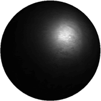 | A material with the appearance of aluminum. |
| Aluminum Anod Emis | 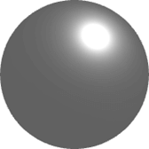 | Anodized aluminum with emissive properties. |
| Aluminum Anodized | 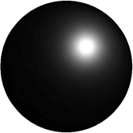 | Anodized aluminum. |
| Aluminum Brushed | 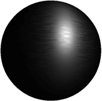 | Brushed aluminum. |
| Aluminum Emissive |
| Aluminum with emissive properties. |
| Copper | 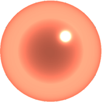 | A material with the appearance of copper. |
| Glass | 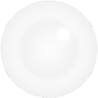 | A material with the appearance of glass. |
| Frosted glass | 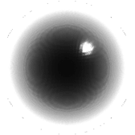 | Frosted glass. |
| Frosted Glass Single Pass | 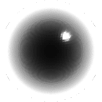 | A single-pass frosted glass. |
| Glass Refractive | Refractive glass. | |
| Paper Artistic | 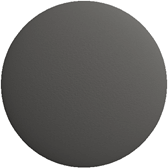 | A paper material with an artistic finishing. |
| Paper Office | 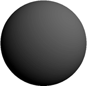 | A paper material with an office-style finishing. |
| Plastic Struct Emissive | 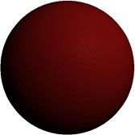 | A red structured plastic material with emissive properties. |
| Plastic Structured | 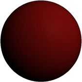 | A red structured plastic material. |
| Steel Milled Concentric | 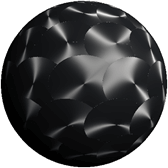 | A milled concentric steel material. |